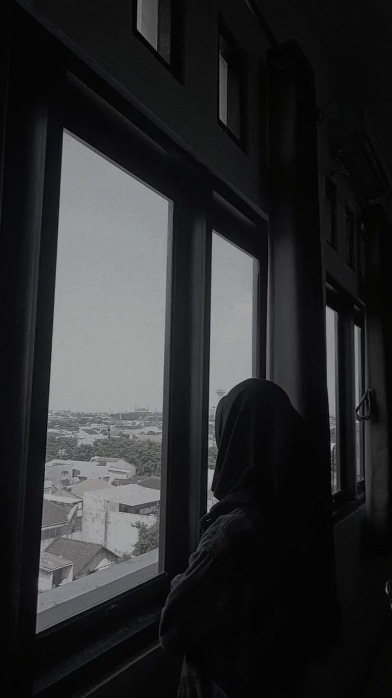

Halo! Nama saya Rahardiana Fauziatun Nufus, seorang Mahasiswa Informatika Universitas PGRI Semarang yang memiliki passion dalam dunia kreativitas dan teknologi. Saya fokus dalam menciptakan pengalaman digital yang inovatif dan ramah pengguna, yang membantu individu dan bisnis untuk mencapai potensi terbaik mereka.
Dengan latar belakang di bidang informatika, saya memiliki kesempatan untuk mengerjakan berbagai proyek, mulai dari pembuatan web dengan desain web yang inovatif. Pendekatan saya menggabungkan desain artistik dengan fungsionalitas praktis, selalu berfokus pada hasil yang sesuai dengan tujuan yang diinginkan.
Saya selalu belajar dan berkembang, mengeksplorasi ilmu dan teknik baru untuk tetap terdepan di dunia teknologi yang terus berkembang. Ketika tidak bekerja, Anda bisa menemukan saya menjelajahi alam maupun mencoba resep baru di waktu luang.
Jika Anda tertarik untuk bekerja sama atau ingin mengetahui lebih lanjut, jangan ragu untuk menghubungi saya melalui lama kontak yang tersedia. Saya sangat antusias untuk menjalin hubungan baru dan berbagi pengalaman.